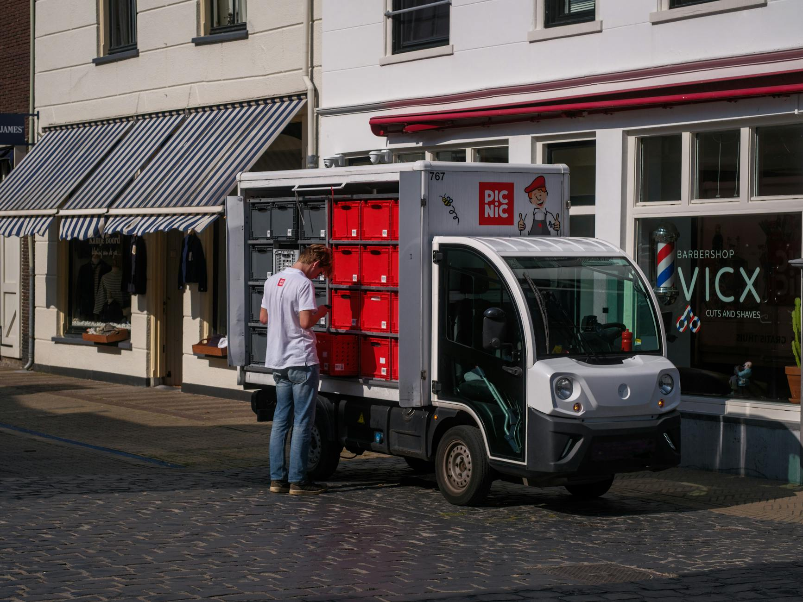

Executive Summary
A global freight company needed to better track shipments and automate customs paperwork. ExpertTech delivered an AI document processing system that cut clearance times in half and provided real-time visibility across the supply chain.
Advanced OCR and translation services removed manual bottlenecks, while analytics dashboards highlighted delays before they became costly.
About the Client
The company manages ocean and air freight for dozens of multinational manufacturers. Each shipment generates stacks of documents that must be processed quickly to avoid delays.
Operations span several continents with customs requirements that vary by port. Prior to this project, teams relied on email and spreadsheets to coordinate paperwork, leading to expensive demurrage fees when forms were incomplete.
The In-Depth Challenge
Manual data entry created bottlenecks and errors. Customs agents often flagged paperwork, causing containers to sit idle at ports. Management needed a scalable approach to capture and validate documents in multiple languages.
Shipment photos and forms arrived from many sources, some handwritten and others in foreign languages. Human reviewers struggled to keep pace, which meant containers waited days for approval.

Technical Deep Dive
Our solution combined OCR with translation APIs and a machine learning model trained on historical shipping forms. Documents were automatically classified, relevant fields were extracted, and customs submissions were generated automatically.
A cloud queue fed processing jobs to containerized workers, while audit logs were pushed to a central dashboard for compliance teams. The following diagram illustrates the workflow.

Quantifiable Results & ROI
By automating document processing, clearance time per shipment dropped by 50%. The company saved over $2M in demurrage fees in the first year and gained a reputation for on-time deliveries.
Real-time shipment data allowed planners to reroute freight proactively, preventing stockouts and improving customer trust.
Client Testimonial
"ExpertTech's AI pipeline ensures our paperwork is flawless, letting us focus on moving goods instead of chasing documents." – Director of Logistics
The logistics team particularly appreciated the error alerts, which reduced time spent investigating missing signatures.